Shorter or Rounder, or More Evenly Bent?
A Visual Tour of Curve Shortening
Theron J Hitchman, UNI
Motivation
Motivation
Motivation
Other Interesing Geometry Problems which are related:
- Finding "geodesics" in general spaces
- Modelling "heat flow"
- Finding harmonic maps
- Mean Curvature Flow of surfaces
- Hamilton's "Ricci Flow"
$\rightarrow$ Perelman's work on the Poincaré conjecture
"Easier" Problem
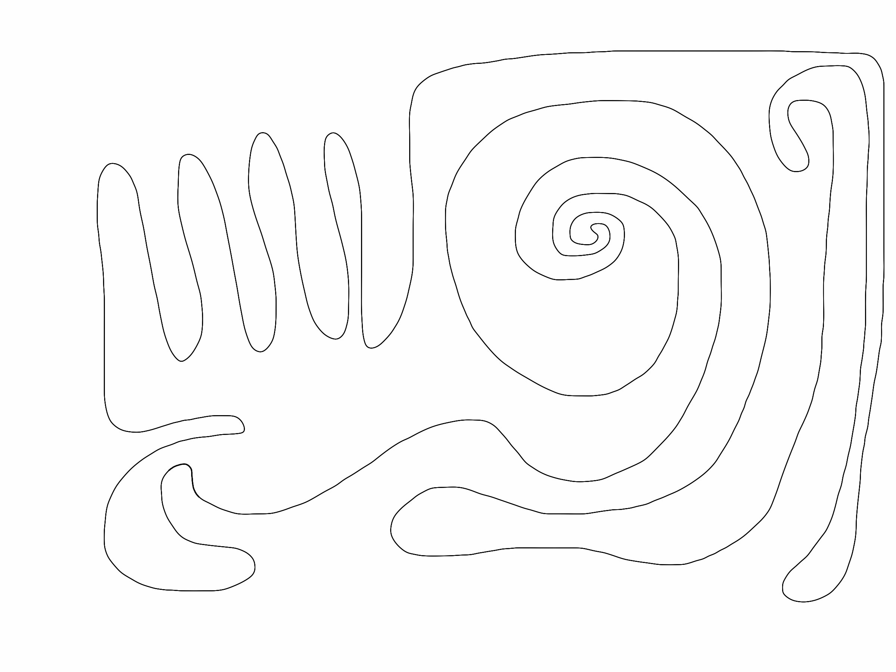A Hippopede
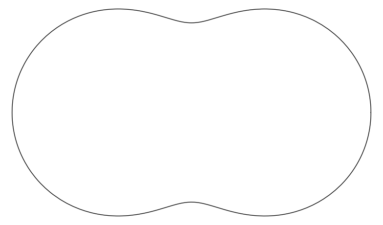Parametrized Curves

Parametrized Curves
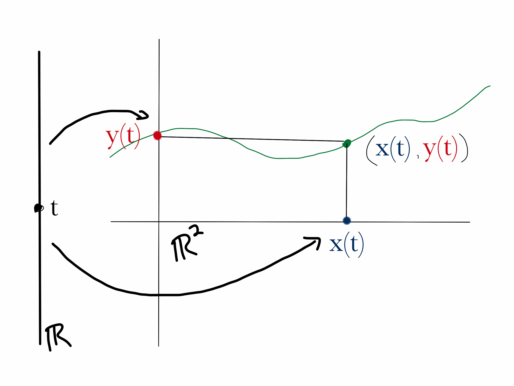Parametrized Curves
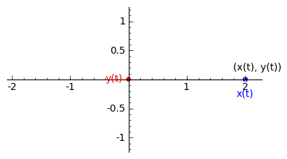Parametrized Curves: Problems
This gives us Calculus. Wooo-Hoo!
What problems do we inherit?
The motion may not reflect the curve, so much as some
strange wandering along it.
How far is it to Dallas from Here?
How far to Houston?
ArcLength Parametrization
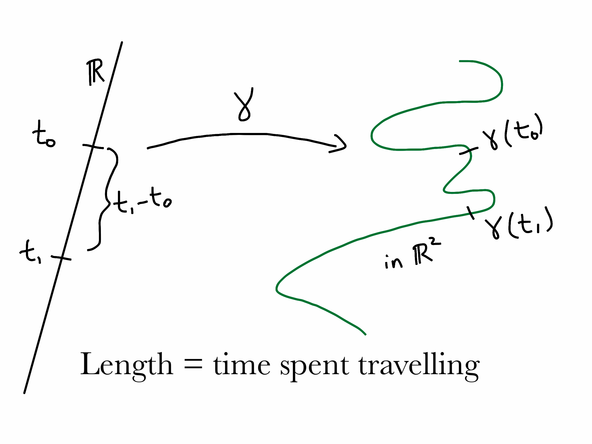Idea of Curvature
We want to make a curve "less bendy."
How can we (use Calculus to) measure how much a particular curve bends?
The Tangent Vector
To find the tangent vector to $$\gamma(t) = (\,x(t), \,y(t)\, ),$$ we simply compute
$$\gamma'(t) = (\,x'(t),\, y'(t)\,)$$ and then scale it to make it length $1$.
Only the direction matters!
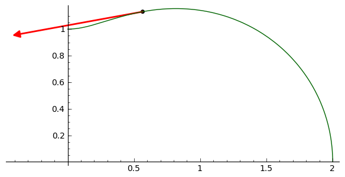
The Normal Vector
Now just turn 90 degrees counter-clockwise from the direction you are facing.
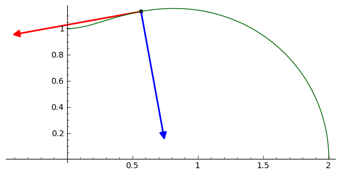We have to have ONE proof
Lemma: The derivative of the tangent vector is parallel to the normal vector.
Proof: The tangent vectors all have unit length (arclength!), so $T \cdot T = 1$ is constant.
Hence $$ 0 = T' \cdot T + T \cdot T' = 2 T' \cdot T .$$
This means $T'$ is orthogonal to $T$, and thus must be parallel to $N$.
Curvature
We write $$T' = \kappa N,$$ and call $\kappa$ the curvature.
Interpretations of Curvature
Natural geometric descriptions:
- $\kappa$ is the rate of change of the angle $T$ makes with the $x$ axis.
- $\kappa$ is the reciprocal of the radius of the circle which best approximates the curve at that point.
The Frenet-Serret Equations
$$ \begin{cases} T' & = \kappa N \\
N' & = - \kappa T \\
\end{cases}$$
Qualitative Meaning of Curvature
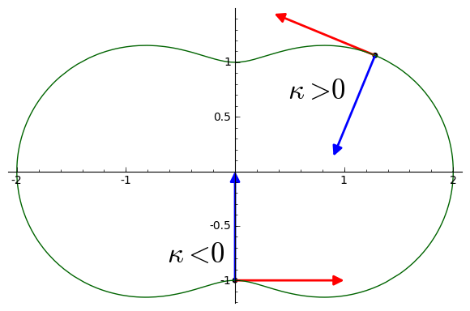Curve Shortening Flow
$$ \dfrac{\partial}{\partial s} \gamma_s(t) = \kappa_s(t) N_s(t). $$
Here $t$ moves along each curve, and $s$ is the "flow direction" we wish to generate, changing $s$ moves us from one curve to another.
Here $t$ moves along each curve, and $s$ is the "flow direction" we wish to generate, changing $s$ moves us from one curve to another.
Educated Guess Time: Part One
What does curve shortening flow do to a line?
Educated Guess Time: Part Two
What does curve shortening flow do to a circle?
Gage & Hamilton
Suppose that your curve is convex , then
- CSF makes sense: the differential equation has a solution.
- In a finite time, the curve shrinks to a single point.
- As the curve shrinks to a point, it gets rounder.
- If we rescale so area enclosed is constant, the limit is a circle.
Convex
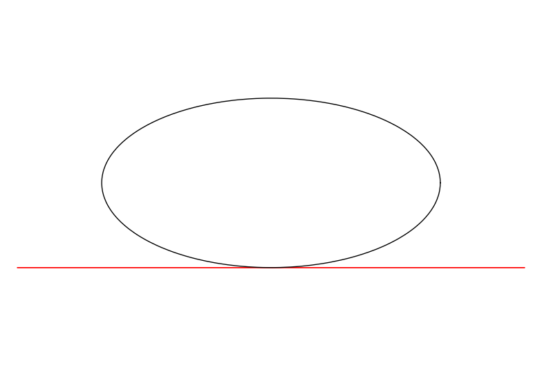Not Convex
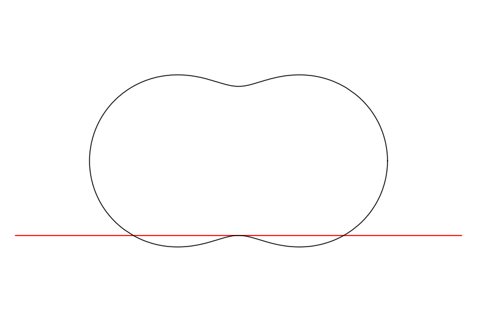Isoperimetric Ratio
A way to test how circular your (simple) curve is:
If $A$ is the area enclosed, and $L$ is the length, then $$ \dfrac{L^2}{A} \geq 4\pi .$$
If $A$ is the area enclosed, and $L$ is the length, then $$ \dfrac{L^2}{A} \geq 4\pi .$$
And equality holds exactly when the curve is a circle.
Some other stuff we know.
Grayson's work
As long as your curve is simple , that is, it does not cross itself, then
CSF will keep the curve simple, and eventually the CSF makes the curve convex.
Aubresch and Langer Examples
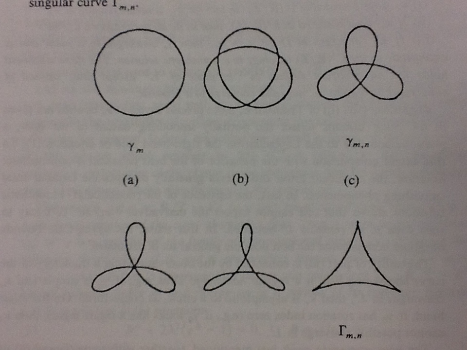Hard questions
- Suppose your curve crosses itself. What does the CSF do to it? Can singularities form, past which CSF doesn't make sense?
- What happens if we perturb one of the Aubresch-Langer examples?
Easier Questions
Let's ask easier questions we still can't solve.
Can we do something for polygons?
Chow-Glickenstein
$$ \dfrac{dB}{dt} = (A-B) + (C-B)$$
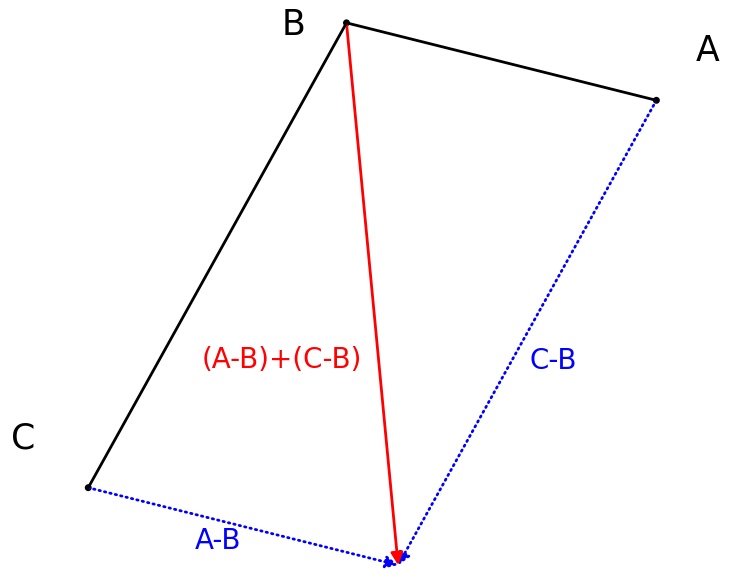
Jecko-Léger: Menger Curvature
$$ \dfrac{dB}{dt} = M(A,B,C) $$
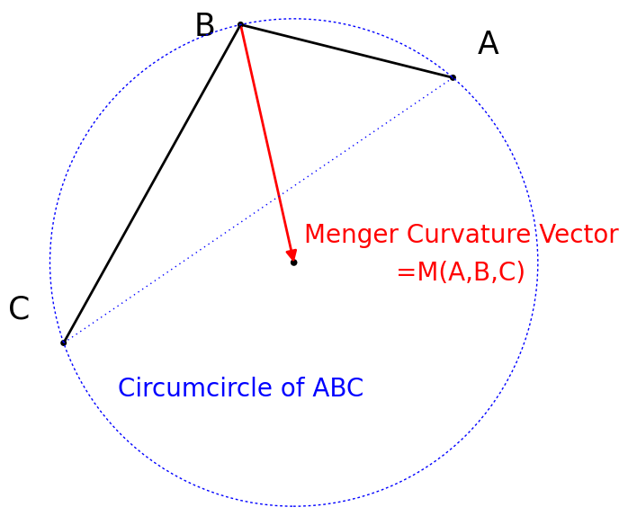
What don't we know about these?
- Do convex curves stay convex?
- Do simple curves stay simple?
- Are there special homothetic solutions?
- How stable are the special solutions?
- Can singularities form?